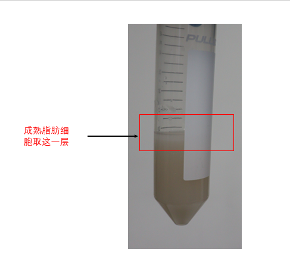

SVF isolation (modified)
Last updated:Isolation and Differentiation of Primary Adipose SVF cells
Reagents：
- SVF media:
To 500 mL bottle of DMEM/F12 add:
55 mL of filtered FBS (Lot tested to support differentiation)
5 mL of Pen/Strep - 100 μm and 40 μm cell strainer
- Digestion buffer:
For 10 mL:
10 mL HBSS 10 mg Collagenase D (Roche) (1 mg/mL= final concentration)
0.15 g of BSA (1.5%=final concentration)
Stock solutions
Insulin: 5 mg/ml = 1000X
- Make 1M HCl: 2.5ml 12M HCl + 27.5ml ddH2O
- Make 50mM HCl: 2ml 1M HCl+ 38ml ddH2O
- Dissolve 100mg of insulin (Sigma I6634) in 20ml of 50mM HCl.
IBMX: 250mM = 500X
Dissolve 832.5 mg of IBMX (Sigma I7018)
in 15ml of DMSO.
Dexamethasone: 1mM = 1000X
Dissolve 5.88mg of dexamethasone (Sigma D4902) in 15ml EtOH.
SVF isolation
- 在1.5mL EP中加入digestion buffer，取小鼠inguinal WAT，放到1.5mL EP管中，至于冰上。(每管4块inguinal, 300μL digestion buffer, reasonable)
- 用眼科剪将iWAT剪碎，肉眼看不到大块脂肪组织。
- 将剪碎后的脂肪组织转移到50mL离心管中，10块fat pad用25mL digestion buffer，37度水浴锅120速度，消化30min-40min，每隔10分钟拿出来剧烈颠倒混匀。
- 消化完成，用100μm 细胞筛过滤，加入30mL SVF media，600g离心5min。
- 需要脂肪组织，取上面白色的一层；取SVF的话，将上面全部弃掉，留下下面的细胞沉淀。 
- 用10mL SVF media将细胞重悬，过40μm细胞筛，600g离心5分钟。
- 弃上清，将细胞重悬后铺板。
- 经验来说，两个inguinal铺到一个100mm dish里, 每天换液的情况下，大约24x6小时长到80%
- 等传代后的细胞长满以后，再过12个小时，加入诱导液，诱导48h。（诱导液配制： SVF media加入终浓度为5 ug/ml insulin+1uM Dexamethasone +0.5 mM isobutylmethylxanthine (IBMX) +1 uM Rosiglitazone）
- 诱导48h后，换成maintain buffer（SVF media 中加入5 ug/ml insulin），每隔两天换一次maintain buffer，第6天细胞已经分化成为成熟的脂肪细胞。